An answer
mdfile for homework 4 in course Biochemistry by 黄悉然, made highly understandable.
Note that a portion of scripts and several software resources are generated or provided by AI.
Select disease and protein of interest.
RBP4, homo sapiens, encoded by gene RBP4;
Function (see reference on UniProt);
Ligand: retinol (vitamin A)
CC1=C(C(CCC1)(C)C)/C=C/C(=C/C=C/C(=C/CO)/C)/C
Family: Lipocalin family;
Length: 201 aa (amino acids); MW: ~21 kDa;
Pathology and variants[4].
All source data are stored in folder Source Data under parent folder;
├── RBP4.seq.fasta
└── RBP4.str.pdb
Including sequence in fasta format and pdb structure with ligand; click to view web source;
Note that the
fastafile is the whole sequence with signal peptide, while the downloadedpdbfile is the mature structure without; the prediction structure file generated in T2 is derived from the downloaded whole sequence, making it an immature structure.
Check fasta file here.
>sp|P02753|RET4_HUMAN Retinol-binding protein 4 OS=Homo sapiens OX=9606 GN=RBP4 PE=1 SV=3
MKWVWALLLLAALGSGRAERDCRVSSFRVKENFDKARFSGTWYAMAKKDPEGLFLQDNIV
AEFSVDETGQMSATAKGRVRLLNNWDVCADMVGTFTDTEDPAKFKMKYWGVASFLQKGND
DHWIVDTDYDTYAVQYSCRLLNLDGTCADSYSFVFSRDPNGLPPEAQKIVRQRQEELCLA
RQYRLIVHNGYCDGRSERNLL
Protein structure prediction.
Run prediction on ProteinX server;
Submit the following sequence and set default parameters;
MKWVWALLLLAALGSGRAERDCRVSSFRVKENFDKARFSGTWYAMAKKDPEGLFLQDNIVAEFSVDETGQMSATAKRVRLLNNWDVCADMVGTFTDTEDPAKFKMKYWGVASFLQKGNDDHWIVDTDYDTYAVQYSCRLLNLDGTCADSYSFFSRDPNGLPPEAQKIVRQRQEELCLARQYRLIVHNGYCDGRSERNLL
Later analysis are mostly based on this cif file: RBP4_str_predict_sample_0.cif.
Operate on cif file with ChimeraX
See
cxssession file.
# 1. Open file
open <path_to_cif_file> format mmcif
# 2. Set basic display arguments
set bgColor white
color #1 #366d47ff
lighting simple
# 3. Highlight variant sites: 73A and 75A
select :73,75
show sel atoms
style sel ball
color sel #8B6508
# 4. Create labels
label :73 text A73T
label :75 text A75T
label height 1.5
label color #ffd87e
# 5. Save figure
select clear
save <path_to_png_file> width 3000 height 2000 supersample 3
Acquire figures.
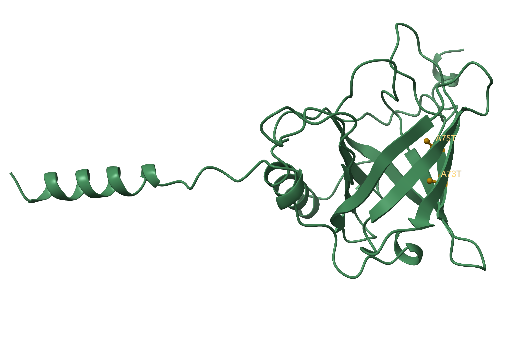
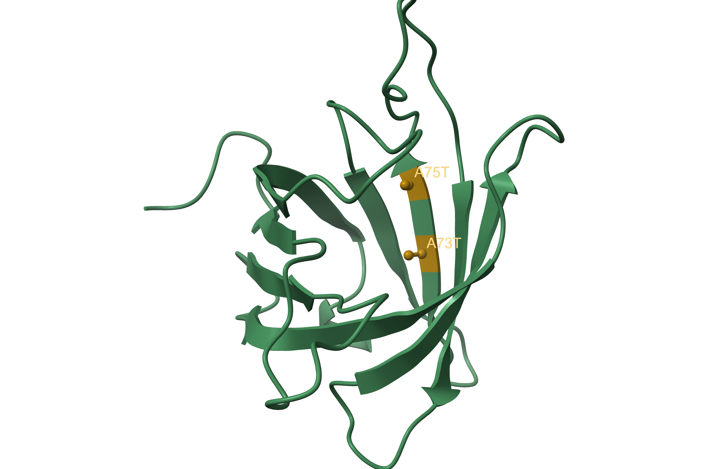
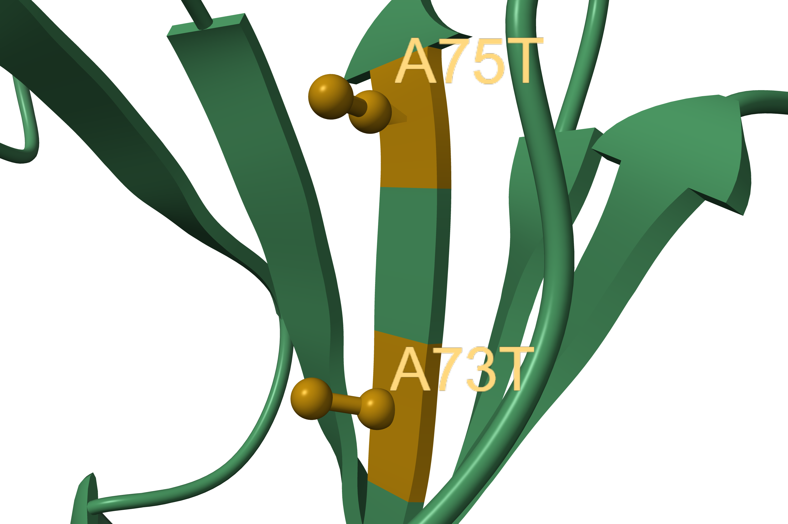
Identify most promising binding pocket.
In this section, RBP4 structure is still based on prediction from T2.
In the last chimera session (from T2), we may use the following command to convert the cif file to a pdb file; this step is for convenience in later analysis;
save <path_to_pdb_file> format pdb models #1
Another approach is to convert the file in linux (if you're unfamiliar with linux, it's an operation system like MacOS or Windows) using the following commands.
aptcommand is primarily used inUbuntu/Debian; forRed Hat/CentOSusers, useyum; forFedorausers, usednf; forAlpineusers, useapk.
$ apt-get update
# If you are not root user, use sudo instead
$ apt-get install -y openbabel
$ obabel <path_to_cif_file> -O <path_to_pdb_file>
linux;
If you are unfamiliar with operating in linux for bioinformatic analysis, watch this teaching video in bilibili to get a quick start;
We first need to install miniconda3 and mamba;
# Change to your working directory
$ cd <your_working_dir>
# Install miniconda3
$ wget -c https://mirrors.tuna.tsinghua.edu.cn/anaconda/miniconda/Miniconda3-latest-Linux-x86_64.sh
$ bash Miniconda3-latest-Linux-x86_64.sh
$ source ~/.bashrc
# If you don't have wget, use apt or yum command lines to install wget
# Install mamba
$ conda install -n base mamba -c conda-forge -y
Then we need to move the pdb file to our working directory.
Install and run fpocket for pocket prediction;
# Install fpocket
$ mamba install -c conda-forge fpocket
# Run fpocket
$ fpocket -f RBP4.str.predict.pdb
# After completion, the results are stored in a directory called RBP4.str.predict_out.
View results.
Under this folder, there are 2 files that are important;
└── pockets
└── [pocket1_atm.pdb](./Results/Pocket/RBP4.str.predict_out/pockets/pocket1_atm.pdb)
RBP4.str.predict_info.txt is a table that lists the credibility (score) of each predicted pocket;
pocket1_atm.pdb is a pdb file that depicts all atoms predicted to form the most possible pocket among all.
See
cxssession file.
Open files and set basic outlook;
# Open files
open <path_to_cif_file> format mmcif
open <path_to_atm.pdb_file>
# Set background and basic settings
set bgColor white
color #1 #366d47ff
lighting simple
hide #2.1 models
select #2
color sel #87ceeb
style sel ball
Visualize pocket;
# We can show the surface of atoms to visualize the pocket
show sel surface
color #2.2 #7cbbbeff
transparency 70
Determine pocket residues and highlight them;
# We can determine pocket residues by setting a distance threshold, like 3.5 Å
select #1 & #2 :<3.5
# Save information on the pocket residues for later analysis as txt file
info residues sel saveFile <path_to_txt_file>
# Highlight selected residues
show sel atoms
color sel byatom
select #1 & ~sel
color sel lightgrey
transparency sel 90 target ac
Record spin movies and save figures;
Show mutation sites relative to the pocket.
# Modify certain outlook
select #2
color sel lightgrey target a
# Highlight mutation sites
select #1:73,75
color sel #8B6508
label :73@ca text A73T
label :75@ca text A75T
label height 1.5
label color #ffd87e
Fig.2a and Mov.2a shows the overview of the pocket; the pocket and pocket atoms are colored in lightblue, with residues within the pocket colored darkgreen;
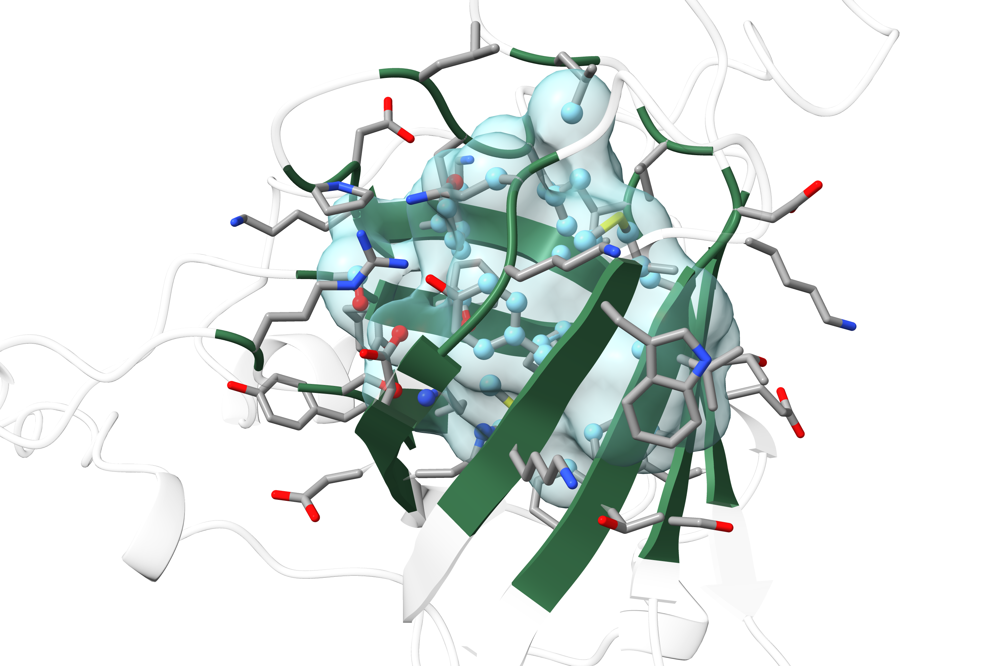
Fig.2b and Mov.2b shows the relative position of mutation sites with the predicted pocket; mutation sites are colored in gold;
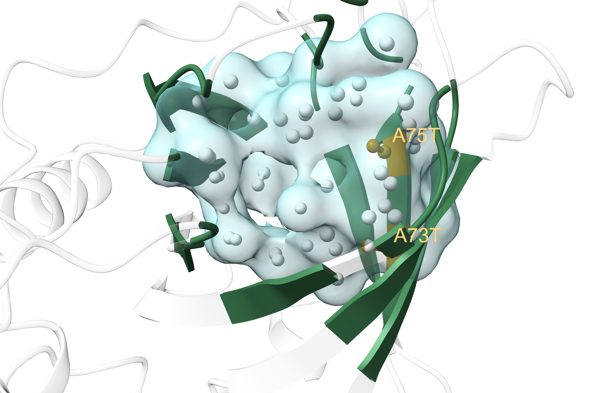
pocket.predict.residues.txt shows all information on predicted residues that constitute the pocket.
The column for
indexin thistxtfile equals a residue's position subtracted by 1. This is because in bioinformatic studies,indexstarts with 0, while position starts with 1.
We can analyze this file with the following commands in linux;
$ wc -l pocket.predict.residues.txt
46 pocket.predict.residues.txt
# Suggests that this pocket is constituted by 46 residues
$ awk -F' ' '{print $5}' pocket.predict.residues.txt |\
> sort | uniq -c | sort -rn
5 PHE
5 LYS
5 ALA
4 SER
4 ASP
3 TYR
3 MET
3 LEU
2 VAL
2 THR
2 GLY
2 GLN
1 TRP
1 PRO
1 ILE
1 HIS
1 GLU
1 ARG
# Counts all residues sorted by type
We can also create a bash script to separate hydrophobic and hydrophilic residues;
# Edit script in vim
vim pocket.predict.residues.count.sh
#!/bin/bash
# Usage: ./pocket.predict.residues.count.sh <count_file> <original_file>
# Example: ./pocket.predict.residues.count.sh pocket.predict.residues.count.txt pocket.predict.residues.txt
count_file="$1"
orig_file="$2"
# 1. Collect positions for each AA from original file
awk '
BEGIN {
split("GLY,ALA,VAL,LEU,ILE,MET,PHE,TRP,PRO", hydro, ",");
for (i in hydro) hydrophobic[hydro[i]] = 1;
split("SER,THR,TYR,ASN,GLN,LYS,ARG,HIS,ASP,GLU", hydrophi, ",");
for (i in hydrophi) hydrophilic[hydrophi[i]] = 1;
hydro_all = "";
phil_all = "";
}
{
# Extract residue ID
match($0, /#1\/A:([0-9]+)/);
pos = substr($0, RSTART+5, RLENGTH-5);
aa = $5;
if (aa in hydrophobic) {
# Per-residue positions
hydro_pos[aa] = hydro_pos[aa] ? hydro_pos[aa] "," pos : pos;
hydro_sum[aa]++;
# Combined positions
hydro_all = hydro_all ? hydro_all "," pos : pos;
} else if (aa in hydrophilic) {
# Per-residue positions
phil_pos[aa] = phil_pos[aa] ? phil_pos[aa] "," pos : pos;
phil_sum[aa]++;
# Combined positions
phil_all = phil_all ? phil_all "," pos : pos;
}
}
END {
# Print
printf "=== Hydrophobic Combined Positions ===\n";
printf "%s\n\n", hydro_all;
printf "=== Hydrophobic by Residue Type ===\n";
for (aa in hydro_pos) {
printf " %s (n=%d): %s\n", aa, hydro_sum[aa], hydro_pos[aa];
}
printf "\n=== Hydrophilic Combined Positions ===\n";
printf "%s\n\n", phil_all;
printf "=== Hydrophilic by Residue Type ===\n";
for (aa in phil_pos) {
printf " %s (n=%d): %s\n", aa, phil_sum[aa], phil_pos[aa];
}
}' "$orig_file"
# 2. Calculate ratios from count file
awk '
BEGIN {
split("GLY,ALA,VAL,LEU,ILE,MET,PHE,TRP,PRO", hydro, ",");
for (i in hydro) hydrophobic[hydro[i]] = 1;
split("SER,THR,TYR,ASN,GLN,LYS,ARG,HIS,ASP,GLU", hydrophi, ",");
for (i in hydrophi) hydrophilic[hydrophi[i]] = 1;
total_hydrophobic = 0;
total_hydrophilic = 0;
}
{
if ($2 in hydrophobic) total_hydrophobic += $1;
else if ($2 in hydrophilic) total_hydrophilic += $1;
}
END {
total = total_hydrophobic + total_hydrophilic;
if (total > 0) {
printf "\n=== Summary ===\n";
printf "Hydrophobic: %d (%.2f%%)\n", total_hydrophobic, total_hydrophobic/total*100;
printf "Hydrophilic: %d (%.2f%%)\n", total_hydrophilic, total_hydrophilic/total*100;
printf "Ratio (Hpho/Hphi): %.2f\n", total_hydrophobic/total_hydrophilic;
}
}' "$count_file"
Run script;
# Alter access to script
$ chmod 754 pocket.predict.residues.count.sh
# Prepare input file
$ awk -F' ' '{print $5}' pocket.predict.residues.txt |\
> sort | uniq -c | sort -rn > pocket.residues.count.txt
# Run
$ ./pocket.predict.residues.count.sh pocket.predict.residues.count.txt pocket.predict.residues.txt
=== Hydrophobic Combined Positions ===
44,45,46,50,53,54,55,59,61,63,73,75,78,80,90,91,92,94,105,108,117,152,153
=== Hydrophobic by Residue Type ===
GLY (n=2): 92,117
LEU (n=3): 53,55,80
PRO (n=1): 50
ILE (n=1): 59
MET (n=3): 45,90,105
PHE (n=5): 54,63,94,152,153
TRP (n=1): 108
ALA (n=5): 44,46,61,73,75
VAL (n=2): 78,91
=== Hydrophilic Combined Positions ===
47,48,49,62,72,74,76,89,93,106,107,115,116,119,120,121,134,135,136,138,149,150,151
=== Hydrophilic by Residue Type ===
GLN (n=2): 115,134
THR (n=2): 74,93
TYR (n=3): 107,135,150
LYS (n=5): 47,48,76,106,116
SER (n=4): 72,136,149,151
ASP (n=4): 49,89,119,120
HIS (n=1): 121
GLU (n=1): 62
ARG (n=1): 138
=== Summary ===
Hydrophobic: 23 (50.00%)
Hydrophilic: 23 (50.00%)
Ratio (Hpho/Hphi): 1.00
With the results above, we may highlight hydrophobic and hydrophilic residues respectively in ChimeraX (within the previous session) and show their relative position to the protein surface (inside or outside the surface).
See
cxssession file.
Pipeline;
# 1. Calculate SASA (an index: the smaller, the deeper a residue is embedded in the protein)
measure sasa #1 & protein setAttribute true
# 2. Select hydrophobic/philic residues
select #1/A:<the_position_vector_of_hydrophobic/philic_residues>
# This vector is shown in the results from running the bash script
show sel atoms
color sel lightgrey target a
# 3. Single out embedded residues via SASA
select #1/A:<the_position_vector_of_hydrophobic/philic_residues> ::area<10
# From this step we can know that 4 hydrophilic and 9 hydrophobic residues can be termed embedded
color sel #8B6508 target a
# 4. Save png file
select clear
save <path_to_png_file> width 3000 height 2000 supersample 3
Acquire figures.
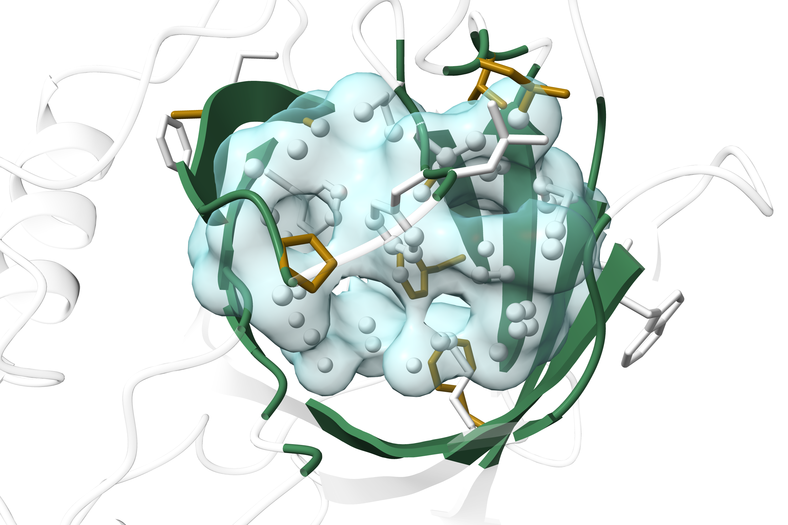
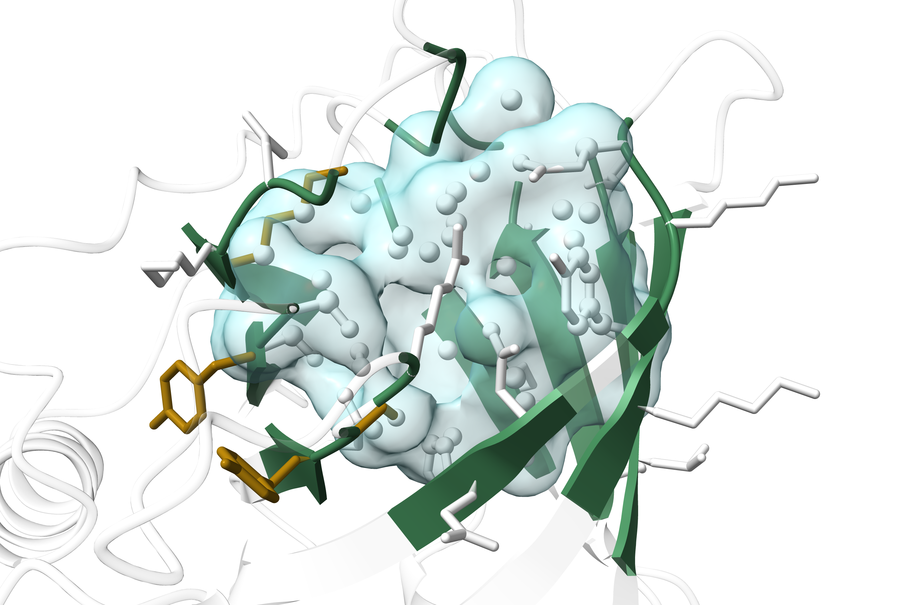
Perform virtual screening for ligand.
In this section, RBP4 structure is still based on prediction from T2.
pdb files;In linux, run the following command;
$ awk -F ' ' '{print $3}' pocket.predict.residues.txt |\
> awk -F ':' '{printf $2 ","}'
44,45,46,47,48,49,50,53,54,55,59,61,62,63,72,73,74,75,76,78,80,89,90,91,92,93,94,105,106,107,108,115,116,117,119,120,121,134,135,136,138,149,150,151,152,153,#
In ChimeraX, run the following commands;
select #1/A:44,45,46,47,48,49,50,53,54,55,59,61,62,63,72,73,74,75,76,78,80,89,90,91,92,93,94,105,106,107,108,115,116,117,119,120,121,134,135,136,138,149,150,151,152,153
measure center sel
Center of mass of 378 atoms = (-9.23, -3.06, 1.41)
Input the coordinate into the platform.
SMILES information in csv file.Performed VinaDock analysis for the top 5 candidates with highest DrugCLIP score;
Downloaded corresponding SMILES information in csv file;
| Mol ID | DrugClip Score | Vina Docking Score |
|---|---|---|
| STL592018 | 3.14 | 43.81 |
| F473-2218 | 3.07 | 3.87 |
| OSSL_321529 | 2.83 | 2.55 |
| STK174716 | 2.78 | 0.04 |
| Z241121656 | 2.77 | 33.99 |
It is obvious that the first candidate (Mol ID: STL592018) would be the best ligand.
Ligand structure;
O=C1C=CC(=O)N1c2ccc(cc2)-c(nc3-c4ccccc4)cc(n3)-c(cc5)ccc5N6C(=O)C=CC6=O
Downloaded docked pdb file STL592018.docked.pdb.
Detailed interactions.
In this section, docked
pdbfile is of the best ligand screened in T4.
See
cxssession file.
Pipeline;
# Open file
open <path_to_pdb_file>
# Disassociate ligand from protein
select #1 & ligand
split #1 & sel
# Basic outlook settings
set bgColor white
select #1.2
color sel byatom target a
color sel #366d47ff target r
transparency 35 target a
transparency 65 target r
select #1.1
color sel #8B6508
Acquire figures.
I used the online analyzing platform PLIP (Protein Ligand-Interaction Profiler) to analyze potential protein-ligand interactions.
Input: submitted pdb file STL592018.docked.pdb;
Output: a txt file listing all interactions found and a pse file that visualizes interactions in a PyMol session, and you may also check results on webpage;
PyMol is another structure analysis software similar to coot; you may acquire your PyMol license by agreeing to use PyMol for educational purposes solely.
Elaboration on txt report columns;
| Column | Name | Meaning | Example |
|---|---|---|---|
| RESNR | Protein residue number | Residue ID in protein chain | 38 |
| RESTYPE | Protein residue type | 3-letter amino acid code | PHE |
| RESCHAIN | Protein chain ID | Chain identifier | R |
| RESNR_LIG | Ligand residue number | Ligand residue ID | 1 |
| RESTYPE_LIG | Ligand residue type | Usually UNL |
UNL |
| RESCHAIN_LIG | Ligand chain ID | Chain identifier | L |
| DIST | Distance | Interaction distance (Å) | 3.16 |
| LIGCARBONIDX | Ligand carbon index | Ligand C atom index | 1624 |
| PROTCARBONIDX | Protein carbon index | Protein C atom index | 311 |
| LIGCOO | Ligand coordinates | (x, y, z) in Å | -3.952, 0.540, 6.468 |
| PROTCOO | Protein coordinates | (x, y, z) in Å | -2.068, 0.210, 8.989 |
| SIDECHAIN | Sidechain involvement | True = sidechain involved |
True |
| DIST_H-A | H to acceptor distance | Distance (Å) | 2.73 |
| DIST_D-A | Donor to acceptor distance | Distance (Å) | 3.50 |
| DON_ANGLE | Donor angle | Angle (degrees) | 139.41 |
| PROTISDON | Protein is donor? | True = protein donates H |
True |
| DONORIDX | Donor atom index | PDB atom index | 947 |
| DONORTYPE | Donor atom type | e.g., O3, Ng+ |
O3 |
| ACCEPTORIDX | Acceptor atom index | PDB atom index | 1614 |
| ACCEPTORTYPE | Acceptor atom type | e.g., Nar |
Nar |
| PROT_IDX_LIST | Protein atom index list | Comma-separated ring atom indices | 505,506,507,508,509,510 |
| CENTDIST | Center distance | Distance between ring centers (Å) | 4.15 |
| ANGLE | Interplanar angle | Angle between ring planes (deg) | 66.37 |
| OFFSET | Ring offset | Perpendicular distance between planes (Å) | 0.59 |
| TYPE | Stacking type | T = T-shaped, P = parallel |
T |
| LIG_IDX_LIST | Ligand atom index list | Comma-separated ring atom indices | 1621,1623,1624,1625,1626 |
Summary table.
Note that the residue indexes below starts with
0. For instance, the original 120 Asp is denoted 119D.
| Interaction Type | Counts | Residues Involved |
|---|---|---|
| Hydrophobic | 14 | 38F, 42W, 54F, 54F, 55L, 55L, 80L, 107Y, 114L, 115Q, 119D, 134Q, 138R, 153F |
| Hydrogen Bonds | 3 | 119D, 136S, 138R |
| π-Stacking | 2 | 63F, 153F |
Visualize in PyMol.
Pipeline;
# First load from the pse file downloaded from PLIP
# Basic Settings
PyMOL>set antialias, 2
Setting: antialias set to 2.
PyMOL>set ray_opaque_background, 1
Setting: ray_opaque_background set to 1.
PyMOL>cmd.color_deep("cyan", 'HBonds', 0)
# Show only residues involved in one specific interaction
PyMOL>select res, STL592018_complex_Protein & resi <RESID>
# <RESID> is the string of IDs of residues involved in the interaction
# e.g., 63+153 for π-stacking
PyMOL>select other, STL592018_complex_Protein & not (res or resn UNL)
# Selected all atoms in protein except previously selected atoms and UNL (code for the ligand)
PyMOL>cmd.hide("sticks" ,"other_atoms")
# Hide other atoms
# Save as figure
PyMOL>ray 3500, 2500
# Ray is a rendering function
PyMOL>png <path_to_your_figure>, dpi=300
Acquire figures.
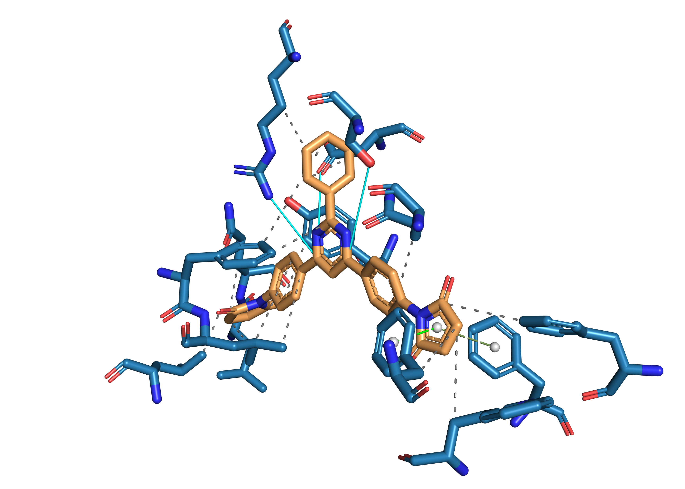
Protein residues, ligand; hydrogen bonds, hydrophobic interactions, T-shaped π-stacking, parallel π-stacking.
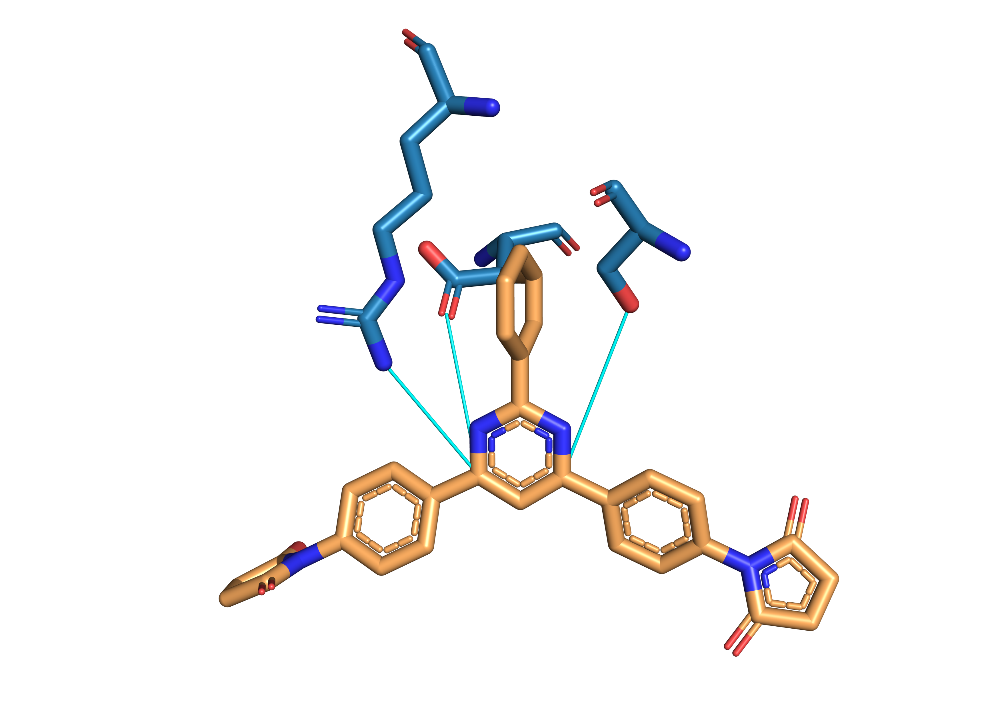
Protein residues, ligand; hydrogen bonds.
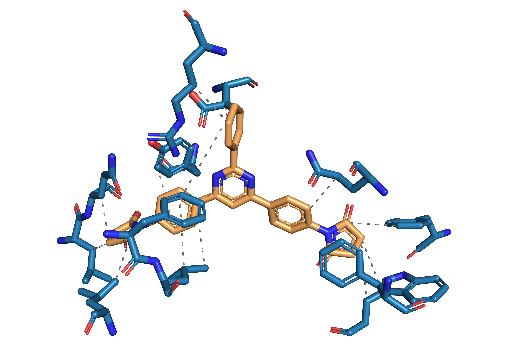
Protein residues, ligand; hydrophobic interactions.
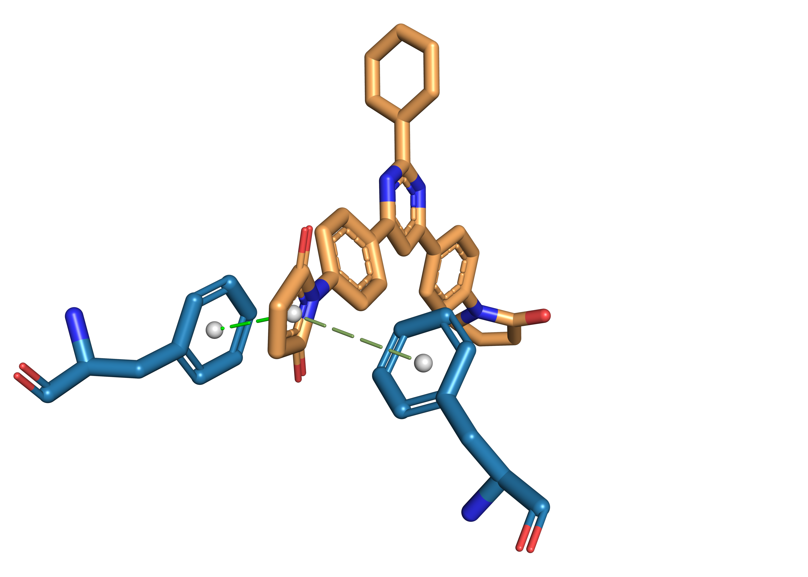
Protein residues, ligand; T-shaped π-stacking, parallel π-stacking.
Visualize in LigPlot+.
LigPlot+ is a structural biology software for 2D visualization of protein-ligand interactions.
You may acquire academic license for and download LigPlot+ on this webpage.
pse file, save the session as a pdb file as input into LigPlot+;
file → Export Molecule;PDB in Save as Type module, and click Write CONECT records for all bonds;pdb to appointed directory.pdb file and export as ps image, then convert ps to png.
Fig.3g shows all interactions, though slightly different from the results acquired from previous analysis as LigPlot+ tends to compute interactions by itself.
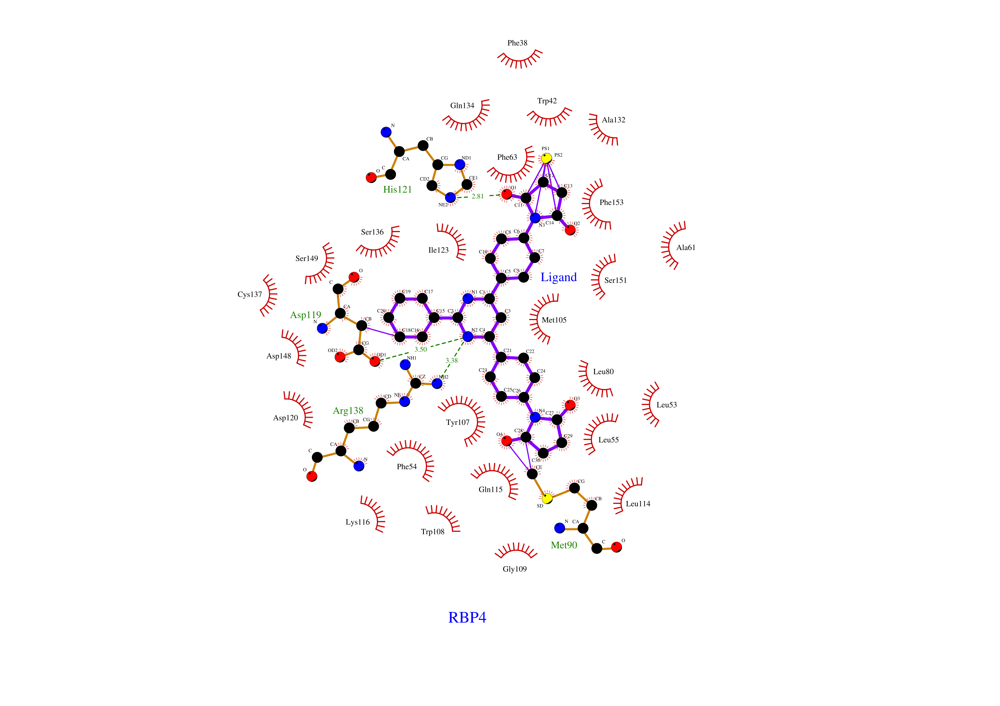
Green dashed line: hydrogen bonds; red eyelashes: hydrophobic contact; yellow ball and converging purple lines: π-stacking.
Affinity refers primarily to the binding strength of the ligand.
O1 atom (the hydroxyl group) in Fig.3g is a proton donor for the NE2 atom in residue His121, and it could be strengthened if the O1 atom is substituted with a carboxyl group (-COOH), which might have more bonding sites (potentially with His121 ND1), better bonding angles and shorter distance;C18 atom in Fig.3g is close to both Asp119 OD1 and Arg138 NH1, while C19 is close to Asp119 O, and hydrogen bonds might be created with the following methods;
C18 with a nitrogen atom that potentially creates hydrogen bond with Asp119 OD1;-OH) to C18 that potentially creates hydrogen bonds with both Asp119 OD1 and Arg138 NH1;-OH) or amino group (-NH2) to C19 that potentially creates hydrogen bond with Asp119 O.-OMe or -Me.Selectivity means that the ligand will bind specifically to RBP4, not other proteins alike.
BLAST to find unique residues in RBP4 binding sites;
BLAST is an algorithm that searches for all homologous or similar sequences with the input in a reference database. blastp means BLAST for proteins.
COBALT, or Constraint-based Multiple Alignment Tool, is an alignment algorithm that supports structure- or function-constrained multiple alignment analysis.
Input 3 accessions: AAB32200.1, 2QOS_C, P02753 (RBP4);
Download output fa and visualized pdf files.
>gb|AAB32200.1| apolipoprotein D, apoD [human, plasma, Peptide, 246 aa] [Homo sapiens]
----------------QAFHLGKCPNPPVQENFDVNKYLGRWYEI-EKIPTTFENGRCIQ
ANYSLMENGKIKVL--NQELRADGTVNQIEGEATPVNLTEPAKLEVKF---SWFMPSA--
PYWILATDYENYALVYSCTCII--QLFHVDFAWILARNPN-LPPETVDSLKNILTSNNID
VKKMTVTDQ-VNCPKLSQAKEPCVESLVSQYFQTVTDYGKDLMEKVKSPELQAEAKSYFE
KSKEQLTPLIKKAGTELVNFLSYFVELGTQPATQ
>pdb|2QOS|C Chain C, Complement component 8, gamma polypeptide [Homo sapiens]
--------------------ASPISTIQPKANFDAQQFAGTWLLV-AVGSAARFLQEQGH
RAEATTLHVAPQGTAMAVSTFRKLDGICWQVRQLYGDTGVLGRFLLQARG-----ARGAV
HVVVAETDYQSFAVLYLERAGQL-------SVKLYARSLP-VSDSVLSGFEQRVQEAHLT
EDQIFYFPKYGFCEAADQFHVLDEVRR---------------------------------
----------------------------------
>sp|P02753.3| RecName: Full=Retinol-binding protein 4; AltName: Full=Plasma retinol-binding protein; Short=PRBP; Short=RBP; Contains: RecName: Full=Plasma retinol-binding protein(1-182); Contains: RecName: Full=Plasma retinol-binding protein(1-181); Contains: RecName: Full=Plasma retinol-binding protein(1-179); Contains: RecName: Full=Plasma retinol-binding protein(1-176); Flags: Precursor [Homo sapiens]
MKWVWALLLLAALGSGRAERDCRVSSFRVKENFDKARFSGTWYAMAKKDPEGLFLQDNIV
AEFSVDETGQMSATAKGRVRLLNNWDVCADMVGTFTDTEDPAKFKMKYWGVASFLQKGND
DHWIVDTDYDTYAVQYSCRLLNLDGTCADSYSFVFSRDPNGLPPEAQKIVRQRQEELCLA
RQYRLIVHN-GYCDGRSERNLL--------------------------------------
----------------------------------
R script to identify unique residues that form protein-ligand interactions.You can download RStudio to code in
Rlanguage. If you're new toR, here's a quick video tutorial.
Create R script;
lines <- readLines("alignment.fa")
# Extract sequences with gaps preserved
seq_apod_full <- ""
seq_c8g_full <- ""
seq_rbp4_full <- ""
current_seq <- NULL
for (line in lines) {
if (grepl("apolipoprotein D", line, ignore.case = TRUE)) {
current_seq <- "apod"
} else if (grepl("2QOS", line, ignore.case = TRUE)) {
current_seq <- "c8g"
} else if (grepl("Retinol-binding protein 4", line, ignore.case = TRUE)) {
current_seq <- "rbp4"
} else if (!grepl("^>", line) && nchar(trimws(line)) > 0) {
seq_line <- trimws(line)
if (current_seq == "apod") {
seq_apod_full <- paste0(seq_apod_full, seq_line)
} else if (current_seq == "c8g") {
seq_c8g_full <- paste0(seq_c8g_full, seq_line)
} else if (current_seq == "rbp4") {
seq_rbp4_full <- paste0(seq_rbp4_full, seq_line)
}
}
}
# Split into characters (including gaps)
apod_vec <- strsplit(seq_apod_full, "")[[1]]
c8g_vec <- strsplit(seq_c8g_full, "")[[1]]
rbp4_vec <- strsplit(seq_rbp4_full, "")[[1]]
# Get RBP4 sequence without gaps (for position reference)
rbp4_no_gap <- rbp4_vec[rbp4_vec != "-"]
rbp4_seq <- paste(rbp4_no_gap, collapse = "")
cat("\n=== RBP4 SEQUENCE (no gaps) ===\n")
cat(rbp4_seq, "\n")
cat(paste0("Length: ", nchar(rbp4_seq), "\n\n"))
# LigPlot+ interaction residues (mature numbering)
interaction_ligplot <- c(42, 54, 55, 63, 80, 107, 114, 115, 119, 134, 136, 138, 153)
# Convert to original sequence numbering (LigPlot+ + 1)
interaction_positions <- interaction_ligplot + 1
# Function to classify amino acid properties
get_property <- function(aa) {
hydrophobic <- c("A", "V", "L", "I", "M", "F", "W", "Y", "P", "G")
positive <- c("R", "K", "H")
negative <- c("D", "E")
polar <- c("S", "T", "N", "Q", "C")
if (aa %in% hydrophobic) return("hydrophobic")
else if (aa %in% positive) return("positive")
else if (aa %in% negative) return("negative")
else if (aa %in% polar) return("polar")
else return("unknown")
}
# Find alignment positions for each interaction residue
results <- data.frame()
for (pos in interaction_positions) {
# Get the actual amino acid at this position in RBP4 (no-gap sequence)
if (pos > nchar(rbp4_seq)) {
next
}
rbp4_aa <- substr(rbp4_seq, pos, pos)
# Find where this position is in the alignment (accounting for gaps)
non_gap_count <- 0
align_idx <- NA
for (i in 1:length(rbp4_vec)) {
if (rbp4_vec[i] != "-") {
non_gap_count <- non_gap_count + 1
if (non_gap_count == pos) {
align_idx <- i
break
}
}
}
if (is.na(align_idx)) {
next
}
apod_aa <- ifelse(apod_vec[align_idx] == "-", "gap", apod_vec[align_idx])
c8g_aa <- ifelse(c8g_vec[align_idx] == "-", "gap", c8g_vec[align_idx])
rbp4_prop <- get_property(rbp4_aa)
apod_prop <- ifelse(apod_aa == "gap", "gap", get_property(apod_aa))
c8g_prop <- ifelse(c8g_aa == "gap", "gap", get_property(c8g_aa))
# Calculate uniqueness score
score <- 0
if (rbp4_aa != apod_aa) score <- score + 1
if (rbp4_aa != c8g_aa) score <- score + 1
if (rbp4_prop != apod_prop) score <- score + 1
if (rbp4_prop != c8g_prop) score <- score + 1
if (apod_prop == c8g_prop & rbp4_prop != apod_prop) score <- score + 1
# Find original LigPlot+ number (pos - 1)
ligplot_num <- pos - 1
results <- rbind(results, data.frame(
Num = ligplot_num,
Original_Num = pos,
RBP4 = rbp4_aa,
RBP4_Prop = rbp4_prop,
APOD = apod_aa,
APOD_Prop = apod_prop,
C8G = c8g_aa,
C8G_Prop = c8g_prop,
Score = score
))
}
# Sort by score descending
results <- results[order(-results$Score), ][1:5,]
cat("\n=== INTERACTION RESIDUES SORTED BY UNIQUENESS SCORE ===\n")
print(results)
Run R script.
Note that the original index starts from
1while the index applied by PLIP starts from0.
r$> source("alignment.unique.R")
=== RBP4 SEQUENCE (no gaps) ===
MKWVWALLLLAALGSGRAERDCRVSSFRVKENFDKARFSGTWYAMAKKDPEGLFLQDNIVAEFSVDETGQMSATAKGRVRLLNNWDVCADMVGTFTDTEDPAKFKMKYWGVASFLQKGNDDHWIVDTDYDTYAVQYSCRLLNLDGTCADSYSFVFSRDPNGLPPEAQKIVRQRQEELCLARQYRLIVHNGYCDGRSERNLL
Length: 201
=== INTERACTION RESIDUES SORTED BY UNIQUENESS SCORE ===
Num Original_Num RBP4 RBP4_Prop APOD APOD_Prop C8G C8G_Prop Score
8 115 116 Q polar P hydrophobic A hydrophobic 5
10 134 135 Q polar V hydrophobic L hydrophobic 5
9 119 120 D negative gap gap V hydrophobic 4
5 80 81 L hydrophobic R positive F hydrophobic 3
7 114 115 L hydrophobic M hydrophobic gap gap 3
-NH2) to ligand C19 that potentially creates hydrogen bond with Asp119 O.This software is for water molecule binding analysis. It can determine whether the interaction of a water molecule and a residue is stable or not. If the binding energy is low, we may modify the ligand to interact targeting this residue to enhance stability.
Please take note that running an MD analysis is extremely time-consuming, sometimes lasting for days/weeks. If you insist running MD, please ensure that you don't shut down your computer during analysis and be patient. An alternative, much faster option is HydraMap, which we will elaborate on later but will not run.
Install ambertools and prepare environment in linux;
The
pdbfile we use is RBP4.str.predict.pdb.
# Install ambertools
$ conda install -c https://mirrors.tuna.tsinghua.edu.cn/anaconda/cloud/conda-forge/ ambertools=24
# Make working directory and move the pdb file into it
$ mkdir ~/MD && cd ~/MD
$ mv <path_to_pdb_file> .
# Create bash scripts for running MD
$ touch run_md.sh monitor.sh
# These scripts can be edited via vim later
Edit 2 bash scripts;
run_md.sh is the script for running MD;
#!/bin/bash
# GIST analysis pipeline for RBP4
set -e # exit on error
# Log file
LOG="md_pipeline.log"
exec > >(tee -a "$LOG") 2>&1
echo "=========================================="
echo "Starting MD pipeline at $(date)"
echo "=========================================="
# Check if PDB exists
if [ ! -f "RBP4.str.predict.pdb" ]; then
echo "ERROR: RBP4.str.predict.pdb not found in current directory"
exit 1
fi
# Step 1: tleap
echo ""
echo "[Step 1] Running tleap..."
cat > leap.in << 'EOFLEAP'
source leaprc.protein.ff14SB
source leaprc.water.tip3p
prot = loadpdb RBP4.str.predict.pdb
solvateOct prot TIP3PBOX 10.0
addIons prot Na+ 0
saveamberparm prot rbp4.prmtop rbp4.inpcrd
quit
EOFLEAP
tleap -f leap.in > leap.out 2>&1
if [ $? -ne 0 ]; then
echo "ERROR: tleap failed. Check leap.out"
exit 1
fi
echo "tleap completed successfully"
# Step 2: Minimization
echo ""
echo "[Step 2] Running minimization (1000 steps)..."
cat > min.in << 'EOFM'
Minimization
&cntrl
imin=1, maxcyc=1000, ncyc=500,
ntb=1, cut=10.0,
ntpr=100
/
EOFM
sander -O -i min.in -o min.out -p rbp4.prmtop -c rbp4.inpcrd -r min.rst
if [ $? -ne 0 ]; then
echo "ERROR: Minimization failed. Check min.out"
exit 1
fi
echo "Minimization completed"
# Step 3: Heating (NVT)
echo ""
echo "[Step 3] Running heating (NVT, 100 ps, gentle ramp)..."
cat > heat.in << 'EOFH'
Heating NVT with temperature ramp
&cntrl
irest=0, ntx=1,
nstlim=100000, dt=0.001,
ntt=3, gamma_ln=2.0, temp0=300.0,
ntb=1, cut=10.0,
ntr=1, restraint_wt=25.0,
restraintmask="!:WAT & !@H=",
ntpr=500, ntwx=5000,
nmropt=1
/
&wt type='TEMP0', istep1=0, istep2=100000, value1=0.0, value2=300.0 /
&wt type='END' /
EOFH
sander -O -i heat.in -o heat.out -p rbp4.prmtop -c min.rst -r heat.rst -ref min.rst
if [ $? -ne 0 ]; then
echo "ERROR: Heating failed. Check heat.out"
exit 1
fi
echo "Heating completed"
# Step 4: Equilibration (NPT)
echo ""
echo "[Step 4] Running equilibration (NPT, 100 ps)..."
cat > equil.in << 'EOFE'
Equilibration NPT
&cntrl
irest=1, ntx=5,
nstlim=100000, dt=0.001,
ntt=3, gamma_ln=2.0, temp0=300.0,
ntb=2, ntp=1, pres0=1.0, taup=2.0,
cut=10.0,
ntr=1, restraint_wt=25.0,
restraintmask="!:WAT & !@H=",
ntpr=500, ntwx=5000
/
EOFE
sander -O -i equil.in -o equil.out -p rbp4.prmtop -c heat.rst -r equil.rst -ref heat.rst
if [ $? -ne 0 ]; then
echo "ERROR: Equilibration failed. Check equil.out"
exit 1
fi
echo "Equilibration completed"
# Step 5: Production MD
echo ""
echo "[Step 5] Running production MD (5 ns, 2.5M steps)..."
cat > md.in << 'EOFM'
Production MD 1 ns
&cntrl
irest=0, ntx=1,
nstlim=1000000, dt=0.001,
ntt=3, gamma_ln=2.0, temp0=300.0,
ntb=2, ntp=1, pres0=1.0, taup=2.0,
cut=10.0,
vlimit=20,
ntwx=5000, ntpr=500, ntwr=5000
/
EOFM
sander -O -i md.in -o md.out -p rbp4.prmtop -c equil.rst -r md.rst -x mdcrd.nc
if [ $? -ne 0 ]; then
echo "ERROR: Production MD failed. Check md.out"
exit 1
fi
echo "Production MD completed"
# Step 6: GIST
echo ""
echo "[Step 6] Running GIST analysis..."
cat > gist.in << 'EOF'
parm rbp4.prmtop
trajin mdcrd.nc
autoimage
reference equil.rst
rms !:WAT reference
gist refdens 0.0334 gridcntr -9.23 -3.06 1.41 griddim 60 60 60 out gist.out
go
EOF
cpptraj -i gist.in
if [ $? -ne 0 ]; then
echo "ERROR: GIST analysis failed. Check gist.out"
exit 1
fi
echo "GIST analysis completed"
echo ""
echo "=========================================="
echo "MD PIPELINE COMPLETED SUCCESSFULLY at $(date)"
echo "=========================================="
echo ""
monitor.sh is the script for monitoring the process in case of errors.
#!/bin/bash
while true; do
if ! pgrep -f "run_md.sh" > /dev/null; then
echo "MD job has stopped at $(date)" >> monitor.log
echo "Last 20 lines of run.log:" >> monitor.log
tail -20 run.log >> monitor.log
break
fi
sleep 900 # Check every 15min
done
Run analysis;
The reason we use
nohupcommand to run these scripts is that the analysis might take days, andnohupensures the project continues to run even if your computer is in sleep mode.
# Run run_md.sh and record everything into run.log
$ nohup bash run_md.sh > run.log 2>&1 &
# Run monitor.sh and record everything into monitor.out
$ nohup bash monitor.sh > monitor.out 2>&1 &
# Open 2 terminals respectively and check timely updates on analysis
$ tail -f run.log
$ tail -f monitor.out
Acquire results and reach conclusions;
dx file says all water molecules have the same entropy, 0, which is absurd; production MD wasn't completed as the computing turns out to be unexpectedly time-consuming);
Alternative solution: HydraMap v.2.
Download the HydraMap v.2 program, test data and test results here or directly get the zip file;
Prepare ligand file through PyMol;
In the last PyMol session (loaded from docked pdb file), run these commands;
PyMOL> save ~\ligand.mol2, resn UNL
Run these commands in linux and acquire results.
# Unzip the zip file
$ unzip <path_to_zip_file>
# Prepare working directory
$ cd HydraMap/Program
$ mv <path_to_RBP4.str.predict.pdb_file> <path_to_ligand.mol2_file> .
# Run MD (refer to HydraMap/README.txt for help)
$ ./wsitem RBP4.str.predict.pdb ligand.mol2 holo 3.0 3.0 2.0 10
$ ./getwat RBP4.str.predict.pdb ligand.mol2 RBP4.str.predict_holo_ws.pdb 5.0
$ ./wnmin RBP4.str.predict.pdb RBP4.str.predict_holo_min-5A.pdb 100
$ ./wnmin2 RBP4.str.predict.pdb ligand.mol2 RBP4.str.predict_holo_min-5A.pdb 100
RING.
This web server is for
RINanalysis. Abbreviated for Residue Interaction Network Generator. It is commonly acknowledged that the more involved a residue is in interactions within the protein, the more likely it's a critical residue in conformational changes, ligand recognition and signaling transduction.
json format, RINGNode cif format or directly on webpage.
The first column in RINGNode cif file lists all residues, and the corresponding Degree column lists how many interactions they are involved in;
In linux, run the following command;
$ awk -F'\t' '{print $1 "\t" $7}' P02753.cif_ringNodes |\
> head -5 | column -t
NodeId Degree
A:1:_:MET 1
A:2:_:LYS 2
A:3:_:TRP 3
A:4:_:VAL 3
Create R script to analyze this cif_ringNodesfile;
# Load the node table
df <- read.table("P02753.cif_ringNodes", header = TRUE, sep = "\t", fill = TRUE)
# Residues of interest
res <- c(42, 54, 55, 63, 80, 107, 114, 115, 119, 134, 136, 138, 153)
ring_res <- res + 1
# Subset
df_sub <- df[df$Position %in% ring_res, c("Position", "Residue", "Degree")]
# Sort by Degree descending
df_sorted <- df_sub[order(-df_sub$Degree), ]
# Switch to original indexes
df_sorted$Position <- df_sorted$Position - 1
# Top 7
head(df_sorted, 7)
Run the script and reach conclusion.
r$> source("RINGNodes.sort.R")
Position Residue Degree
108 107 TYR 10
135 134 GLN 10
139 138 ARG 10
154 153 VAL 10
137 136 SER 9
43 42 TYR 8
120 119 ASP 8
C18 or C16.C19, or substituting C18 with nitrogen.C19.Experimental strategies.
STL592018) competes with RBP4's natural ligand, retinol (vitamin A), for binding to the same pocket.Williamson, K. A., et al. Mutations in RBP4 cause an autosomal dominant form of microphthalmia. Am. J. Hum. Genet. 105(3): 566-577, 2019. ↩︎
Verma, A., et al. Clinical spectrum of RBP4-related microphthalmia. Ophthalmology. 128(4): 612-619, 2021. ↩︎
Chou, C. M., et al. RBP4 retinol-binding protein. Mol. Vis. 26: 412-425, 2020. ↩︎
Chou, C. M., et al. Biochemical basis for dominant inheritance, variable penetrance, and maternal effects in RBP4 congenital eye disease. Cell. 161(3): 634-646, 2015. ↩︎
Sharif, O., et al. Time-resolved fluorescence resonance energy transfer and surface plasmon resonance-based assays for retinoid and transthyretin binding to retinol-binding protein 4. Analytical Biochemistry. 393(1): 73-80, 2009. ↩︎
Liedberg, B., Nylander, C., & Lundström, I. Surface plasmon resonance for gas detection and biosensing. Sensors and Actuators. 4: 299-304, 1983. ↩︎
Isken, A., et al. RBP4 disrupts vitamin A uptake homeostasis in a STRA6-deficient animal model for Matthew-Wood syndrome. Cell Metabolism. 7(3): 258-268, 2008. ↩︎